GridView의 컬럼의 InputType이 radio인 경우 label을 출력하는 예제입니다. 설정에 통해 고정 문자 또는 GridView의 컬럼 데이터를 조합하여 출력할 수 있습니다.
(기본설정) label 설정 없음
고정된 문자열로 radio의 label 출력하기
GridView의 컬럼의 값을 조합하여 radio의 label 출력하기
사용자 함수를 통해 radio의 label 출력하기
각 GridView의 첫번째 컬럼에 radio를 설정하였습니다. 출력된 chekbox의 label을 비교합니다.
영역 [(기본설정) label 설정 없음]의 GridView를 확인합니다
GridView의 컬럼의 inputType을 radio로 설정한 예시입니다.
첫 번째 컬럼에 radio가 출력됩니다.
[브라우저(Chrome) 실행 예시]
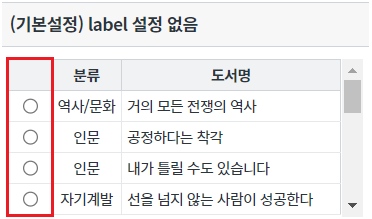
영역 [radio의 label - 고정 문자]의 GridView를 확인합니다
GridView의 컬럼의 inputType을 radio로 설정하고 고정된 문자열 "선택"을 label로 출력한 예시입니다.
컬럼 '선택'에 radio와 label '선택'이 함께 출력됩니다.
[브라우저(Chrome) 실행 예시]
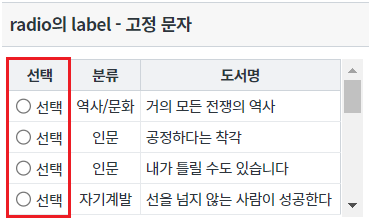
영역 [radio의 label 적용 - 컬럼 조합]의 GridView를 확인합니다
GridView의 컬럼의 inputType을 radio로 설정하고 GridView의 컬럼 "분류"와 "도서명"의 데이터를 label로 출력한 예시입니다.
컬럼 '분류 - 도서명'을 확인합니다.
[브라우저(Chrome) 실행 예시]
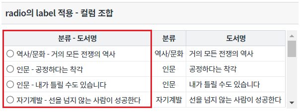
영역 [radio의 label 적용 - 사용자 함수 적용]의 GridView를 확인합니다
GridView의 컬럼의 inputType을 radio로 설정하고 사용자 함수를 통해 생성된 label을 출력한 예시입니다.
컬럼 '[분류] 도서명'을 확인합니다.
[브라우저(Chrome) 실행 예시]
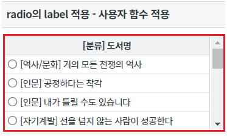
STEP1. GridView의 바디 컬럼의 속성을 정의합니다.
[필수] inputType="radio"
[필수] radioLabel="선택" //inputType="radio"인 경우 label을 표시하기 위한 속성
그림 1.웹스퀘어5 SP5 스튜디오의 Design 탭 예시 - 바디 컬럼 선택
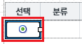
그림 2.웹스퀘어5 SP5 스튜디오의 Property View(속성창) 예시 - 바디 컬럼
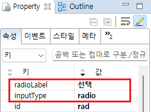
[소스 코드 예시]
<!-- gridView 의 소스 본문 예시 --> <w2:gridView dataList="data:dlt_books_2"> <!-- 중략 --> <w2:gBody id="gBody1" style=""> <w2:row id="row2" style=""> <w2:column inputType="radio" radioLabel="선택" id="rad"></w2:column> <!-- 중략 --> </w2:row> </w2:gBody> </w2:gridView>
STEP1. GridView의 바디 컬럼의 속성을 정의합니다.
[필수] inputType="radio"
[필수] radioLabelColumn="컬럼 ID" //inputType="radio"인 컬럼의 경우 다른 컬럼의 정보를 조합하여 해당 컬럼의 label을 생성
예시) radioLabelColumn="categoryLabel,label"
[선택] radioLabelDelimiter=" - " //컬럼 데이터 간의 구분자
그림 3.웹스퀘어5 SP5 스튜디오의 Design 탭 예시 - 컬럼 선택
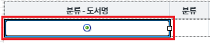
그림 4.웹스퀘어5 SP5 스튜디오의 Property View(속성창) 예시 - 바디 컬럼
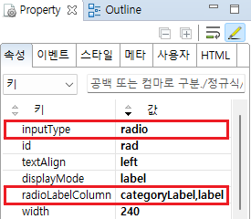
[소스 코드 예시]
<!-- gridView 의 소스 본문 예시 --> <w2:gridView dataList="data:dlt_books_2"> <!-- 중략 --> <w2:gBody id="gBody1" style=""> <w2:row id="row2" style=""> <w2:column inputType="radio" radioLabelColumn="categoryLabel,label" radioLabelDelimiter=" - " id="rad"> </w2:column> <!-- 중략 --> </w2:row> </w2:gBody> </w2:gridView>
STEP1. GridView의 바디 컬럼의 속성을 정의합니다.
[필수] inputType="radio"
[필수] radioLabelFormatter="함수명" //inputType="radio"인 경우 radio 버튼의 label로 표시할 값으로의 변환을 수행하는 함수 이름
예시) radioLabelFormatter="scwin.grd_exam4_radioLabelFormatter"
그림 5.웹스퀘어5 SP5 스튜디오의 Design 탭 예시 - 컬럼 선택
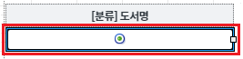
그림 6.웹스퀘어5 SP5 스튜디오의 Property View(속성창) 예시 - 바디 컬럼
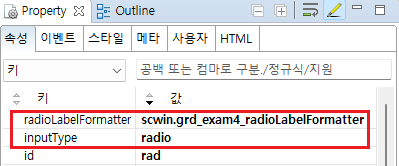
스크립트 탭에서 속성 "radioLabelFormatter"에 정의 한 함수를 정의합니다.
[소스 코드 예시]
/** * 영역 [radio의 label 적용 - 사용자 함수 적용]의 radioLabelFormatter */ scwin.grd_exam4_radioLabelFormatter = function (row, col, label) { var jsnRow; var returnValue; //현재 행의 json 데이터 추출 jsnRow = dlt_books_4.getRowJSON(row); //데이터 조합 returnValue = "[" + jsnRow.categoryLabel + "] " + jsnRow.label; return returnValue; };
radioLabel
radioLabelColumn
radioLabelDelimiter
radioLabelFormatter
[웹스퀘어5 SP5 개발 가이드] GridView
링크 : https://docs1.inswave.com/sp5_user_guide/bc10c1b82c9a2a0b#e1c4658baf7e726f
[웹스퀘어5 SP5 개발 가이드] GridView inputType="radio"
링크 : https://docs1.inswave.com/sp5_user_guide/86bdcf48029b958b#54c339d4323bd579
[웹스퀘어5 SP5 개발 가이드] GridView radioLabelColumn
링크 : https://docs1.inswave.com/sp5_user_guide/86bdcf48029b958b#891f16bedef90d17
GridView radioLabelColumn
링크 : https://youtu.be/3AzVyG6XZ6k
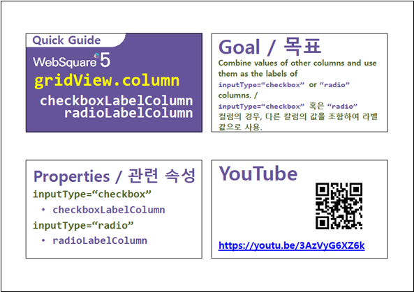